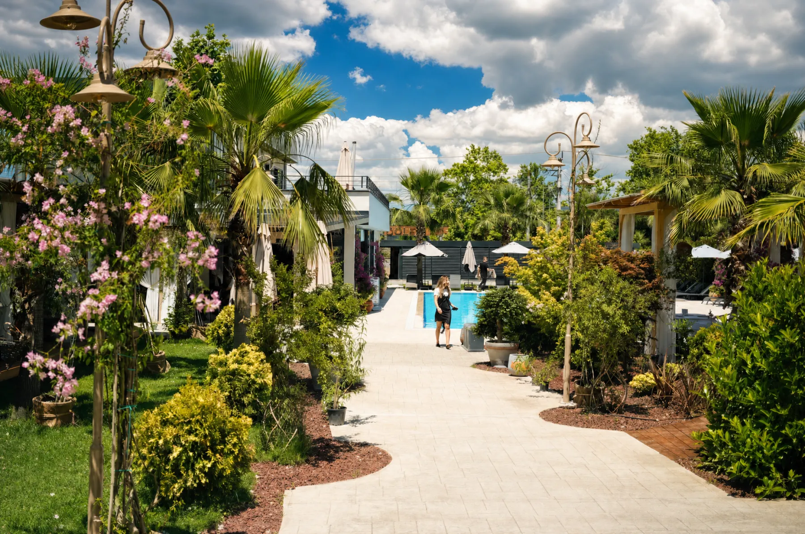

Sapanca Gölü'nün suları, günün her saatinde farklı bir ışık oyunu sunar. Bir doğum günü kutlamasını bu manzaraya karşı yaşamak, anıyı bambaşka bir seviyeye taşır.
Neden Gölün Hemen Yanında Bir Doğum Günü?
Kapalı, sıradan bir mekânda geçen bir doğum günü ile gölün üzerine düşen ışığa karşı kutlanan bir doğum günü arasındaki fark, fotoğraflardan çok anının kendisinde hissedilir. Sapanca'da gölün hemen yanındaki doğum günü arayanlar, bu farkı fark ediyor.
Mare Gastro, tam olarak bu deneyimi sunmak için Didi Otel'in göl kıyısındaki bahçesinde konumlandı.
Didi Otel Bahçesi: Sapanca Gölü'nün Hemen Yanında
Çam ağaçlarının gölgesinde, gölün serinliğine açılan masalarda kutlanan bir doğum günü, doğanın kendisini davetli listenize eklemiş gibi hissettirir. Hikâyemizden bu atmosferin nasıl tasarlandığını okuyabilirsiniz.

Gün Batımı mı, Gece mi? Hangi Saat Daha Etkileyici?
Gün batımı saatlerinde gölün üzerine düşen altın ışık, fotoğraf karelerine yansıyan en etkileyici anlardan biri. Gece saatlerinde ise ışıklandırma ve genellikle eşlik eden canlı müzik, aynı manzarayı daha samimi bir atmosfere dönüştürüyor.
Hangi saati tercih ederseniz edin, konumumuza göz atarak konumumuzu netleştirebilirsiniz.
Gölün Hemen Yanındaki Masalarda Rezervasyon Önerileri
Gölün hemen yanındaki masalar, özellikle hafta sonu akşamlarında hızlı dolduğundan erken rezervasyon öneriyoruz. Rezervasyon sırasında manzara tercihinizi belirtirseniz, size en uygun masayı ayırırız.